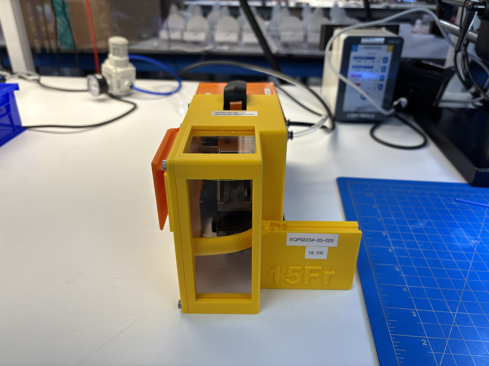
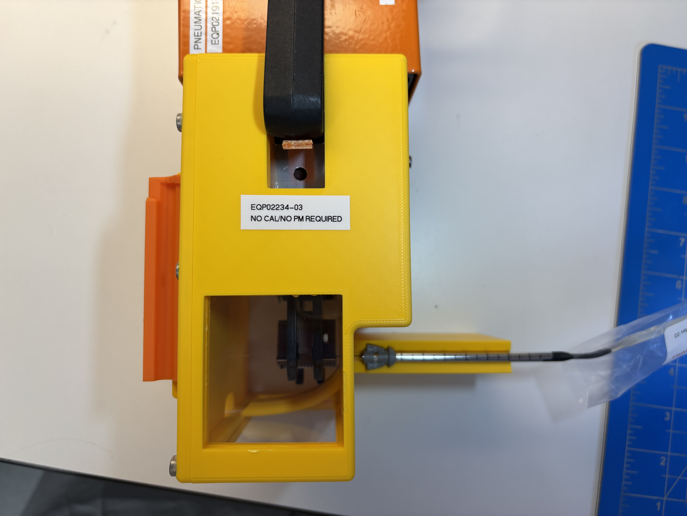
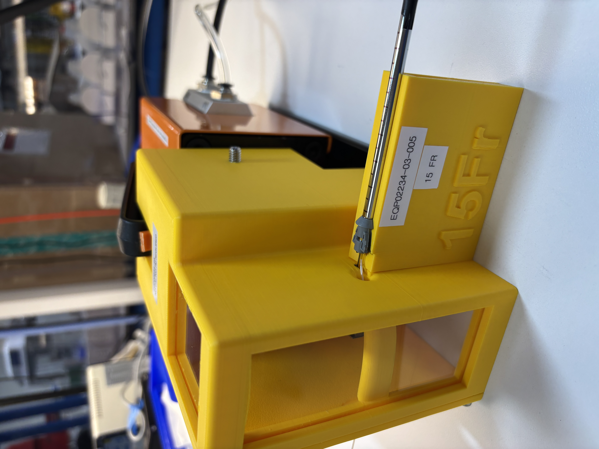
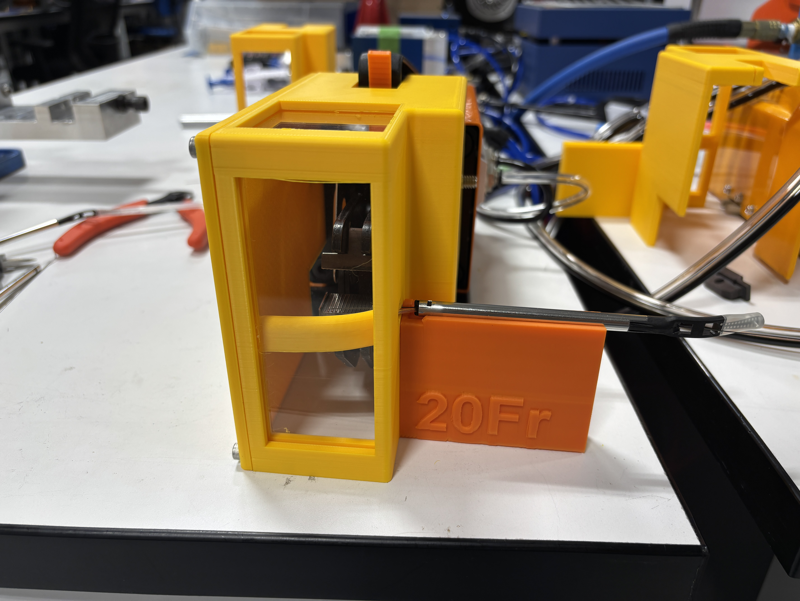

pull wire crimp alignment fixture

A manufacturing fixture designed during my engineering internship at Ladera Medical to consistently align a pull wire with crimp dies during assembly. the fixture was developed to improve repeatability, prevent kinking of the wire during crimping, and support ongoing clinical builds.
Presentation at UCSF Undergraduate Computational Neuroscience Symposium 2025
design process
The fixture went through several iterations using a rapid CAD → print → test → revise workflow.
The first revision was a one-piece, press-fit proof of concept designed around a single pull wire subassembly. after testing the fixture and gathering feedback from manufacturing technicians, i rebuilt the CAD in SolidWorks with fully defined sketches and dimensions and expanded the design to support additional assembly requirements.
later revisions:
- Added a guide tube and marker tube port to control component alignment
- Incorporated interchangeable tracks for both device size configurations
- Split the fixture into four modular components around a shared base, allowing individual sections to be modified without redesigning the entire fixture
- Differentiated interchangeable components to make setup easier for manufacturing technicians
- Added a storage system for the track not in use
during a clinical build, an additional hub spacer was needed unexpectedly. i redesigned the component, routed the design change, and 3D printed the revised fixture within three hours so the build could continue on schedule.



tools and methods
- SolidWorks CAD
- FDM 3D printing
- Iterative prototyping
- Design for manufacturing
- Mannufacturing technician feedback
- Engineering change control
impact
The final fixture provided a repeatable method for aligning the pull wire during crimping while accommodating multiple device sizes. The modular design also reduced future redesign effort and made it easier to adapt the fixture as manufacturing requirements changed.